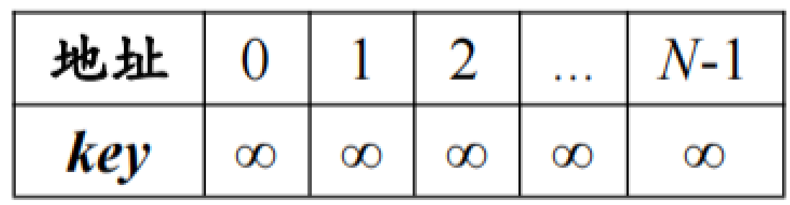
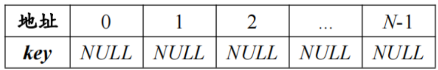

1.定义及初始化
1.1 宏定义
typedef int ElemType; // 假设存储int类型数据 #define INF INT_MAX // 开放地址法使用无穷大表示无数据 #define P 13 // 不大于m但最接近或等于m的质数p
1.2 开放地址法和再哈希法
typedef struct HashTable { ElemType* pList; // 顺序存储空间 int kNum; // 顺序表中关键字的个数 int tLength; // 哈希表表长 }HashTable;

void initHashTable(HashTable& HT, int tLength) { HT.pList = (ElemType*)malloc(sizeof(ElemType) * tLength); HT.tLength = tLength; for (int i = 0; i < HT.tLength; i++) HT.pList[i] = INF; HT.kNum = 0; }
1.3 链地址法
typedef struct CHashTable { ElemType** pList; // 元素为指针类型的顺序存储空间 int kNum; // 顺序表中关键字的个数 int tLength; // 哈希表表长 }CHashTable;

哈希地址为i的关键字都存在单链表中。
void initCHashTable(CHashTable& CHT, int tLength) { // 生成tLength个指针类型的存储空间的顺序表 CHT.pList = (LinkList*)malloc(sizeof(LinkList) * tLength); CHT.tLength = tLength; // 生成每个不带头结点的单链表 for (int i = 0; i < CHT.tLength; i++) { CHT.pList[i] = NULL; } // 关键字个数为0 CHT.kNum = 0; }
1.4 哈希函数
int Hash(ElemType key) { return key % P; }
1.5 开放地址法元素增量
// 从索引1开始存储元素的增量 int Di[100] = { 0 }; // 计算探测序列Di void getDi(int tLength) { // 生成线性探测序列 //for (int i = 1; i <= tLength; i++) // Di[i] = i; // 生成二次探测序列 for (int i = 0; i < tLength / 2; i++) { Di[2 * i] = (i + 1) * (i + 1); Di[2 * i + 1] = -(i + 1) * (i + 1); } }
2.查找
2.1 计算探测序列
// 从索引1开始存储元素的增量 int Di[100] = { 0 }; // 计算探测序列Di void getDi(int tLength) { // 生成线性探测序列 for (int i = 1; i <= tLength; i++) Di[i] = i; //// 生成二次探测序列 //for (int i = 1; i <= tLength / 2; i++) //{ // Di[i] = i * i; // Di[i + 1] = -i * i; //} }
2.2 开放地址法查找
问题
设计算法在开放地址法解决冲突的哈希表中查找关键字k的位置。
代码
bool searchHashTable(HashTable HT, ElemType key, int& pos) { // 计算出key的哈希地址 int Hi = Hash(key); // 记录冲突次数 int i = 0; // 发生冲突，继续探测 while (HT.pList[Hi] != INF && HT.pList[Hi] != key) { // 发生冲突，冲突次数加1，i可以用于计算ASLsucc i++; // 线性探测计算第i次冲突发生时需要的地址 Hi = (Hi + Di[i]) % HT.tLength; // // 二次探测 // Hi = (Hi + Di[i] + HT.tLength) % HT.tLength; } // 查找失败时，Hi为空白存储单元的位置 pos = Hi; // 查找成功时，Hi为关键字的位置 if (HT.pList[Hi] == key) return true; return false; }
3.插入关键字
3.1 开放地址法插入
问题
设计算法在开放地址法解决冲突的哈希表中插入一个关键字。
要求：先在哈希表中查找关键字k，如果关键字k已存在在表中，则查找成功，不再执行插入操作；如果关键字k不存在于表中，则查找失败，执行插入操作，将k插入哈希表中。
代码
void insertHashTable(HashTable& HT, ElemType key) { int pos = -1; // 记录带插入位置 // 查找key bool ret = searchHashTable(HT, key, pos); // 若查找失败，插入key if (!ret) { HT.pList[pos] = key; HT.kNum++; } }
3.2 链地址法插入
问题
设计算法在链地址法解决冲突的哈希表中插入一个关键字。
要求：先在哈希表中查找关键字k，如果关键字k已存在在表中，则查找成功，不再执行插入操作；如果关键字k不存在于表中，则查找失败，执行插入操作，将k插入哈希表中。
代码
void insertCHashTable(CHashTable& CHT, ElemType key) { int i = Hash(key); LinkNode* pCur = CHT.pList[i]; while (pCur != NULL) { if (pCur->key == key) break; pCur = pCur->next; } if (pCur == NULL) { // 申请一个数据结点 LinkNode* tmpNode = (LinkNode*)malloc(sizeof(LinkNode)); tmpNode->key = key; // 在链头插入数据结点 tmpNode->next = CHT.pList[i]; CHT.pList[i] = tmpNode; // 哈希表个数加1 CHT.kNum++; } }
4. 删除
4.1 开放地址法删除
问题
设计算法在开放地址法解决冲突的哈希表中删除关键字k。
要求：先在哈希表中查找关键字k，如果关键字k在于表中，则查找成功，执行删除操作；如果关键字k不存在于表中，则查找失败，不执行删除操作。
代码
void deleteHashTable(HashTable& HT, int key) { int pos = -1; // 记录带插入位置 // 查找key bool ret = searchHashTable(HT, key, pos); // 若查找成功，删除key if (ret) { HT.pList[pos] = INF; HT.kNum--; } }
4.2 链地址法删除
问题
设计算法在链地址法解决冲突的哈希表中删除关键字k。
要求：先在哈希表中查找关键字k，如果关键字k在于表中，则查找成功，执行删除操作；如果关键字k不存在于表中，则查找失败，不执行删除操作。
代码
void deleteCHashTable(CHashTable& CHT, ElemType key) { // 获取哈希值 int i = Hash(key); // 前驱与当前地址 LinkNode* preNode = NULL; LinkNode* pNode = CHT.pList[i]; // 在联众查找值为key的结点 while (pNode != NULL) { // 当前结点是否为key if (pNode->key == key) { if (preNode != NULL) // 不是第一个结点 preNode->next = pNode->next; else // 第一个结点 CHT.pList[i] = pNode->next; // 哈希表关键字减1 CHT.kNum--; // 释放内存 free(pNode); // 停止查找 break; } preNode = pNode; pNode = pNode->next; } }